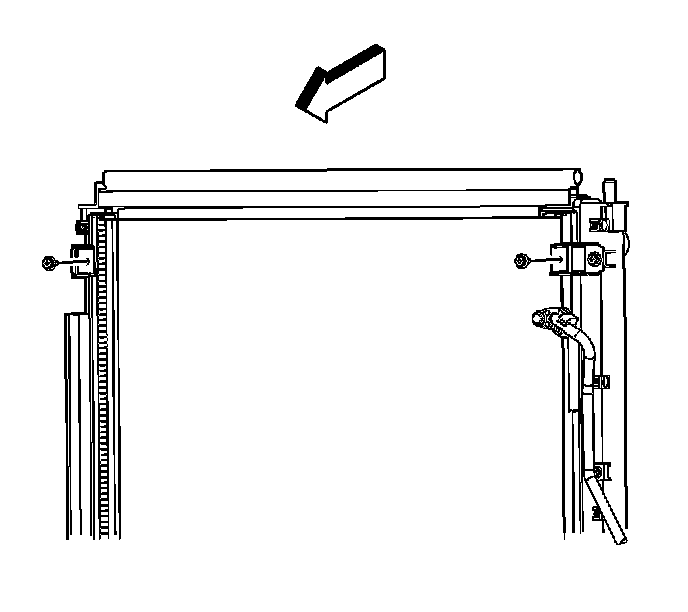
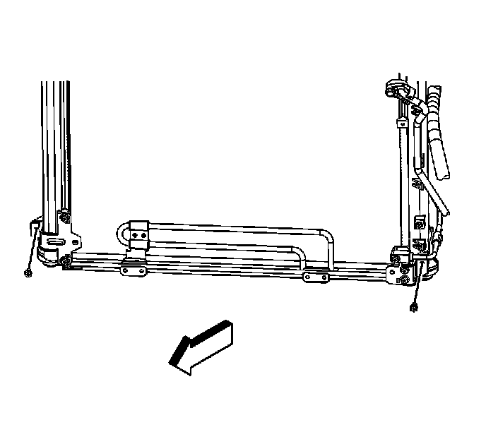
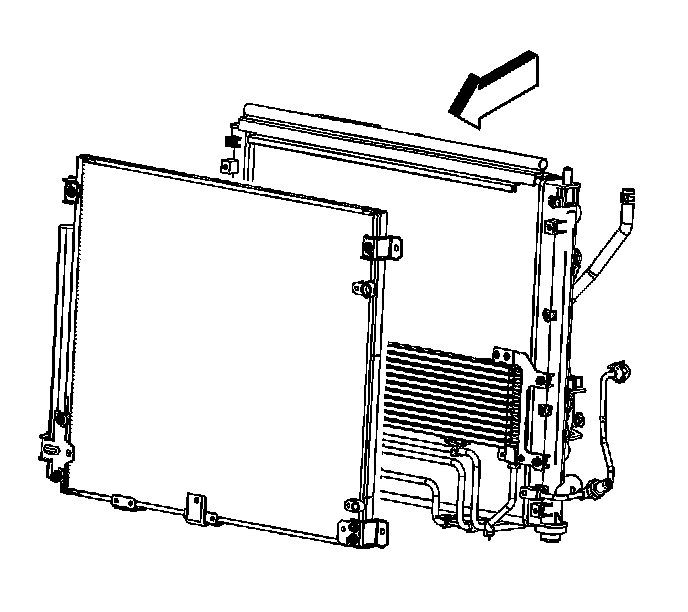

Condenser Replacement (Heavy Duty Cooling)
Condenser Replacement (Heavy Duty Cooling)
Tools Required
J 39400-A Halogen Leak Detector
Removal Procedure

1. Recover the refrigerant. Refer to Refrigerant Recovery and Recharging (Refrigerant Recovery and Recharging) .
2. Remove the power steering cooler mounting bolts. Refer to Power Steering Fluid Cooler Replacement (With V92) (Power Steering Fluid Cooler Replacement (With V92))Power Steering Fluid Cooler Replacement (Without V92) (Power Steering Fluid Cooler Replacement (Without V92)) .
3. Raise and support the vehicle. Refer to Lifting and Jacking the Vehicle (Service and Repair) .
4. Remove the front air deflector retainers.
5. Remove the front air deflector.
6. Remove the lower air baffle push pin retainers.

7. Remove the condenser upper bracket bolts.

8. Remove the condenser lower mounting bolts.

9. Remove the discharge line bolt.
10. Disconnect the discharge line from the condenser.
11. Remove and discard the O-ring.

12. Remove the condenser tube bolt.
13. Disconnect the condenser tube from the condenser.
14. Remove and discard the O-ring.

Important: Reposition the power steering cooler aside to aid in removing the condenser.
15. Reposition the power steering cooler.
16. Remove the condenser.
Installation Procedure
1. If replacing the condenser, add the specified amount of PAG oil directly to the condenser. Refer to Refrigerant System Capacities ([1][2]Capacity Specifications) .
2. Install the condenser.
3. Reposition the power steering cooler into position.
4. Install a new O-ring to the condenser tube. Refer to O-Ring Replacement (Service and Repair) .
5. Connect the condenser tube to the condenser.
Notice: Refer to Fastener Notice (Fastener Notice) .
6. Install the condenser tube bolt.
Tighten the bolt to 9 N.m (80 lb in).
7. Install a new O-ring to the discharge line. Refer to O-Ring Replacement (Service and Repair) .
8. Connect the discharge line to the condenser.
9. Install the discharge line bolt.
Tighten the bolt to 9 N.m (80 lb in).
10. Install the condenser lower mounting bolts.
Tighten the bolts to 5.4 N.m (48 lb in).
11. Remove the condenser upper bracket bolts.
Tighten the bolts to 5.4 N.m (48 lb in).
12. Install the lower air baffle push pin retainers.
13. Install the front air deflector.
14. Install the front air deflector retainers.
15. Lower the vehicle.
16. Install the power steering cooler mounting bolts. Refer to Power Steering Fluid Cooler Replacement (With V92) (Power Steering Fluid Cooler Replacement (With V92))Power Steering Fluid Cooler Replacement (Without V92) (Power Steering Fluid Cooler Replacement (Without V92)) .
17. Evacuate and recharge the A/C system. Refer to Refrigerant Recovery and Recharging (Refrigerant Recovery and Recharging) .
18. Leak test the fittings of the component using the J 39400-A .